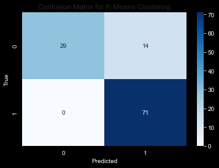
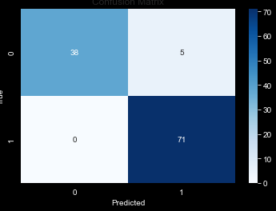
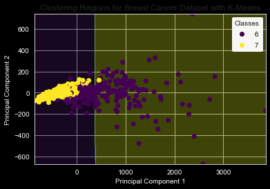
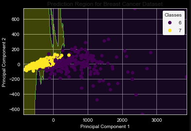

K-Means Clustering is a popular and versatile unsupervised learning algorithm used for grouping data into k distinct, non-overlapping subgroups (or clusters). Unlike supervised learning methods like k-NN, K-Means does not rely on labeled data. Its objective is to partition n observations into k clusters in which each observation belongs to the cluster with the nearest mean, serving as a prototype of the cluster.
Mathematical Description
K-Means clustering seeks to minimize the within-cluster variances, also known as squared Euclidean distances. The algorithm can be broken down into the following steps:
Initialization: K initial “means” (centroids) are randomly selected from the data points.
Assignment Step: Each observation is assigned to the nearest centroid, and clusters are formed.
Update Step: The centroid of each cluster is recalculated as the mean of all points assigned to that cluster.
Iteration: Steps 2 and 3 are repeated until the centroids no longer change significantly, indicating convergence.
The mathematical formulation of the objective is to minimize the sum of the squared distances between each data point and its corresponding cluster centroid:
( S_i ) is the set of all points assigned to the ith cluster.
Variants of K-Means
Several variants of the K-Means algorithm exist, such as K-Means++, which offers an improved method of centroid initialization, and Mini-Batch K-Means, which uses subsets of the data to speed up the convergence process.
Application
To demonstrate the practical use of K-Means, we can apply it to the same dataset we used in the classification section; however, we will ignore the provided labels and perhaps use these labels for a comparison.
#import required librariesimport pandas as pdimport osimport numpy as npimport warningsimport matplotlib.pyplot as pltimport seaborn as snsfrom sklearn.datasets import load_breast_cancerfrom sklearn.cluster import KMeansfrom sklearn.metrics import accuracy_scorefrom sklearn.metrics import silhouette_scorefrom sklearn.model_selection import train_test_split, cross_val_scorefrom scipy.stats import mode#inline plots%matplotlib inline# Set Seaborn style to "whitegrid" for a white background with grid linessns.set_style("whitegrid")#supress warnings!warnings.simplefilter(action='ignore', category=Warning)# Set the display option to show all columnspd.set_option('display.max_columns', None)print("required libraries loaded successfully!")
required libraries loaded successfully!
# Load the datasetdata = load_breast_cancer()X = data.datay = data.targetfeature_names = data.feature_names# Convert the data to a pandas DataFramedf = pd.DataFrame(X, columns=feature_names)df['target'] = y
# Split the dataset into training and testing setsX_train, X_test, y_train, y_test = train_test_split(X, y, test_size=0.2, random_state=42)# Initialize the K-Means model# Assuming we want to create k clusters where k is the number of unique classes in yk =len(set(y))kmeans = KMeans(n_clusters=k, random_state=42)# Train the model on the training data# Note that we don't use y_train as K-Means is unsupervisedkmeans.fit(X_train)# Assign clusters to the test datay_pred = kmeans.predict(X_test)# Evaluate the clustering (Note: direct accuracy may not be meaningful for clustering)# The accuracy here will most likely not be meaningful.accuracy = accuracy_score(y_test, y_pred)print("Accuracy:", accuracy)
Accuracy: 0.12280701754385964
# Map cluster labels to original class labels (0, 1, etc.)# This mapping is heuristic and may not be perfectcluster_labels = np.zeros_like(y_pred)for i inrange(k): mask = (y_pred == i) cluster_labels[mask] = mode(y_test[mask])[0]# Now plot the confusion matrixcm = confusion_matrix(y_test, cluster_labels)sns.heatmap(cm, annot=True, fmt='g', cmap='Blues')plt.xlabel('Predicted')plt.ylabel('True')plt.title('Confusion Matrix for K-Means Clustering')plt.show()

below is the output of the KNN classification algorithm for comparison!

KNN Confusion Matrix for the same dataset
# Reduce the dimensionality of the dataset to 2 dimensions using PCApca = PCA(n_components=2)X_pca = pca.fit_transform(X)# Split the dataset into training and testing setsX_train, X_test, y_train, y_test = train_test_split(X_pca, y, test_size=0.2, random_state=42)# Initialize the K-Means model with the number of clusters equal to the number of unique classesk =len(set(y))kmeans = KMeans(n_clusters=k, random_state=42)# Train the K-Means model on the training datakmeans.fit(X_train)# Create a meshgrid for the plotx_min, x_max = X_pca[:, 0].min() -1, X_pca[:, 0].max() +1y_min, y_max = X_pca[:, 1].min() -1, X_pca[:, 1].max() +1xx, yy = np.meshgrid(np.arange(x_min, x_max, 1), np.arange(y_min, y_max, 1))# Get the cluster assignments for each point in the meshgridZ = kmeans.predict(np.c_[xx.ravel(), yy.ravel()])Z = Z.reshape(xx.shape)# Plot the clustering regionsplt.contourf(xx, yy, Z, alpha=0.3, cmap='viridis')# Plot the data pointsscatter = plt.scatter(X_pca[:, 0], X_pca[:, 1], c=y+6, cmap='viridis')# Add a legendlegend = plt.legend(*scatter.legend_elements(), title='Classes')plt.gca().add_artist(legend)# Show the plotplt.xlabel('Principal Component 1')plt.ylabel('Principal Component 2')plt.title('Clustering Regions for Breast Cancer Dataset with K-Means')plt.show()


Classification Regions for Breast Cancer Dataset with KNN